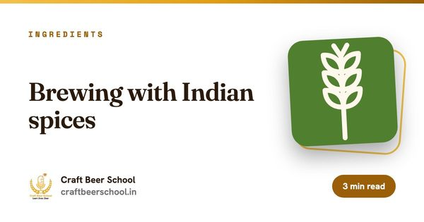

फॉरमॅटऑनलाइन
कालावधी4 आठवडे
सेशन्स8 लाइव्ह, प्रत्येकी 2 तास
बॅचजास्तीत जास्त 20
फी₹9,999

हे कोणासाठी आहे
हा course तुमच्यासाठी आहे का?
- Craft gin brand ची योजना करणारे founders
- Gin सुरू करणारे brewers आणि distillers
- Bottle मध्ये काय आहे ते समजून घ्यायचे असलेले bartenders
कोर्सच्या शेवटी
तुम्ही काय घेऊन जाल.
- Distilled, London dry आणि compound gin मधील फरक समजावून सांगा
- Botanical bill तयार करा आणि प्रत्येक botanical कसा जाणवेल याचा अंदाज बांधा
- Still run, cuts आणि bottling strength पर्यंत proofing याची योजना करा
- एका bottle चा खर्च काढा आणि त्यामागच्या licences ची यादी करा
तुमचे इन्स्ट्रक्टर आणि संपर्क व्यक्ती
हा course कोण शिकवतं आणि कोणाला विचारायचं.

अभ्यासक्रम
आठवड्यागणिक.
4 आठवडे. प्रत्येक weekend ला दोन live सत्रे आणि आठवड्याला एक assignment.
आठवडा 01. gin म्हणजे काय आणि कायदा
- Juniper पुढे असायलाच हवा: gin ला gin काय बनवते
- Distilled, London dry आणि compound gin
- Base म्हणून neutral spirit, आणि अनेक भारतीय craft gin ते botanicals सोबत पुन्हा का distil करतात
- Licences आणि contract distilling. नियम राज्यानुसार बदलतात, म्हणून तुमच्या राज्याचे तपासा
Assignment: तीन gins चाखा आणि प्रत्येक botanical काय आणतो त्याचे वर्णन करा.
आठवडा 02. Botanicals
- Classic संच: juniper, धणे, angelica, लिंबूवर्गीय सालं आणि orris
- भारतीय मसाले, लिंबूवर्गीय फळं आणि चहा: juniper हरवू न देता ते कसे वापरावे
- Maceration आणि vapour basket
- एकेक botanical स्वतंत्र distil करून blend करणे
Assignment: तुमच्या स्वतःच्या gin साठी botanical bill तयार करा, प्रत्येकाच्या कामासह.
आठवडा 03. Run आणि finish
- Still भरणे आणि चालवणे
- Heads, hearts आणि tails: run मध्ये flavour कुठे असतो
- Bottling strength पर्यंत कमी करणे आणि oils मुळे gin धूसर का होऊ शकतो
- Bottling आधी chill filtering आणि विश्रांती
Assignment: एका sample run साठी cuts आणि reduction ची योजना करा.
आठवडा 04. Brand, खर्च आणि बाजार
- एका bottle चा खर्च काढणे: spirit, botanicals, energy, काच आणि duty
- Imported आणि इतर भारतीय gins च्या तुलनेत positioning
- Label registration आणि excise. नियम राज्यानुसार बदलतात
- Bars, retail आणि तुमचे पहिले वर्ष
Assignment: तुमचा gin launch करण्यासाठी एका पानाची योजना लिहा.
हे कसं चालतं
स्वरूप आणि अटी.
- वेळापत्रक
- शनिवार आणि रविवारी live, 12:00 PM ते 2:00 PM IST. Cohort शी परस्पर संमतीने वेळ बदलू शकते.
- Batch चा आकार
- जास्तीत जास्त 20 विद्यार्थी, त्यामुळे प्रत्येक प्रश्नाला उत्तर मिळते.
- समाविष्ट
- सत्रांचे recordings, presentation decks, आठवड्याचे assignments आणि learning kit.
- प्रमाणपत्र
- सगळे assignments जमा केल्यावर आणि किमान 80% live सत्रांना हजर राहिल्यावर Certificate of Completion.
- Screen च्या पलीकडे
- सुचवलेल्या microbrewery भेटी, म्हणजे तुम्ही ज्या kit चा अभ्यास करत आहात ते प्रत्यक्ष पाहता येते.
- फी
- नोंदणी करतानाच पूर्ण रक्कम भरायची. कोणतीही सवलत लागू नाही. एकदा निश्चित झालेलं courses चं package बदलता येत नाही.
संपूर्ण फ्लाइट हवी आहे? सर्व 29 कोर्सेस मिळून 75 आठवडे होतात. नोंदणीच्या वेळी तुम्ही तुमचे पॅकेज निवडता. पैसे भरण्यापूर्वी सर्व 29 कोर्सेस तपासा आणि रिफंड धोरण वाचा.
वाचत राहा
सुरुवात करण्याआधी वाचा

साहित्य
भारतीय मसाल्यांसह brewing
भारताचा मसाल्याचा डबा हा खरंच कमी वापरला जाणारा brewing ingredient आहे. पहिल्या वेळी त्याचं प्रमाण साफ चुकणं सोपं आहे.

बिझनेस
भारतात मायक्रोब्रुअरी कशी सुरू करावी
brewhouse हा सोपा भाग आहे. तुम्ही सुरू करू शकाल की नाही, हे लायसन्सिंग, कूलिंग आणि वर्किंग कॅपिटल ठरवतात.

बिझनेस
Brewery compliance checklist
Brewery ला लागणारे सगळे एकाच office मधून मिळत नाही. संपूर्ण यादी इथे आहे, गटांमध्ये, म्हणजे कशासाठी कोणाला फोन करायचा ते कळेल.
वाचण्यासारखं
या course ची सगळी गाइड.
या कोर्समधील विषयांवर 88 मोफत गाइड. पहिल्या सत्राआधी यापैकी कोणतेही वाचा.
व्हिस्की 55
- क्राफ्ट डिस्टिलरीची योजना आखणे: पहिले निर्णय
- Craft distillery साठी bottling line
- Distillery QC chemist म्हणून करिअर
- धान्यापासून ग्लासपर्यंत distillery business plan
- एकाच distillery चं vertical tasting
- Distillery मध्ये batch records आणि traceability
- Batch विरुद्ध continuous distillation
- भारतात distiller बनणं
- Craft whisky distillery साठी budget lines
- Distillery शिवाय whisky brand उभा करणं
- भारतात distillery साठी जागा निवडणं
- Breweries आणि distilleries मधली collaborations
- नवीन distillery commission करणं
- Contract distilling आणि sourced whisky
- Distillers साठी cooperage च्या मूलभूत गोष्टी
- Distillation logs आणि त्यात काय नोंदवायचं
- Distillers yeast विरुद्ध brewers yeast
- भारतात distillery effluent treatment
- चांगल्या process flow साठी distillery layout
- Distillery visitor centres आणि tours
- Distillery चे पाण्याचे हक्क आणि बोअरवेल नियोजन
- Rye distil करणं आणि foam आटोक्यात ठेवणं
- Double distillation समजून घ्या
- Whisky distillery मधला ऊर्जेचा वापर
- Distillery मध्ये ethanol vapour आणि आग लागण्याचे स्रोत
- Foreshots, methanol आणि distillery सुरक्षा
- Distilleries साठी धान्य खरेदी
- Distillery मध्ये hazardous area zoning
- तुमचा पहिला distiller नेमणं
- Craft distilleries साठी hybrid stills
- IBD distilling qualifications समजून घ्या
- Distillery KPI म्हणून प्रति टन litres of alcohol
- छोट्या distillery साठी mash tun चे पर्याय
- Distillery साठी grist दळणं
- एकाच distillery मध्ये peated आणि unpeated runs
- Distilling malt spec वरचा predicted spirit yield
- Distillery मध्ये process water आणि reduction water
- Malt distillery मध्ये feints recycle करणं
- Distillery quality control lab उभी करणं
- Distillery operator म्हणून shift मधलं आयुष्य
- Craft distillery साठी stills चा आकार ठरवणं
- Craft distillery मध्ये small batch whisky blending
- दुसऱ्या distillery कडून new make घेणं
- Malt distillery मध्ये spirit yield काढणं
- छोट्या distillery साठी steam boilers
- Distilling चा अभ्यास आणि महत्त्वाच्या qualifications
- भारतातली distillery licence प्रक्रिया
- Triple distillation समजून घ्या
- Distillery साठी utilities, पाण्यापासून विजेपर्यंत
- Distillery साठी standard operating procedures लिहिणं
- Malt whisky साठी भारतीय six-row barley वापरणे: distillers पुढची आव्हानं
- भारतातील craft distillery साठी oak casks मिळवणं
- Whisky मधील off-notes: sulphur, feints आणि distillers ते कसे शोधतात
- Bridge products: whisky maturation च्या काळात नवी distillery काय विकते
- Distillery KPIs: yield, litres of pure alcohol आणि losses
ड्रिंक्स बिझनेस 24
- खरी जिन ब्रँड कथा तयार करणे
- जिनसाठी न्यूट्रल स्पिरिट खरेदी करणे: दर्जा आणि कॉन्ट्रॅक्ट
- प्रॉडक्ट लाइन म्हणून कॅनमधील जिन आणि टॉनिक
- कॉन्ट्रॅक्ट-डिस्टिल्ड जिन: हे कसे चालते आणि काय तपासावे
- क्राफ्ट जिनच्या एका बाटलीचा खर्च काढणे
- क्राफ्ट जिनची निर्यात: लेबल, भागीदार आणि बाजार
- फ्लेवर्ड जिन: बिझनेस केस आणि धोके
- जिन ब्रँडची फंडिंग: गुंतवणूकदार काय पाहतात
- क्राफ्ट जिन बार, दुकाने आणि हॉटेलांपर्यंत पोहोचवणे
- जिन डिस्टिलरी बिझनेस प्लॅनमध्ये काय काय असते
- जिन डिस्टिलरी परवाना: बहुतेक ठिकाणी सारखे असलेले टप्पे
- जिन डिस्टिलरीसाठी प्रोजेक्ट रिपोर्ट लिहिणे
- जिनची बाटली आणि पॅकेजिंग: संस्थापक कमी लेखतात ते खर्च
- जिन लाँच करण्यापूर्वी बाजार संशोधन
- जिन ब्रँडसाठी उत्पादन क्षमतेचे नियोजन करणे
- क्राफ्ट जिनची किंमत आणि पोझिशनिंग ठरवणे
- जिन ब्रँड शेकड्यांवरून हजारो केसपर्यंत वाढवणे
- थेट जिन विकणे: ऑनलाइन, इव्हेंट आणि डिस्टिलरी शॉप
- व्यावसायिक जिनसाठी बोटॅनिकल्सची खरेदी
- जिन ब्रँड सुरू करणे: स्वतः डिस्टिल करा किंवा कॉन्ट्रॅक्टवर द्या
- नव्याने रुजू होणाऱ्यांसाठी gin, vodka आणि rum
- Craft gin साठी भारतीय botanicals आणि still मध्ये ते कसे वागतात
- स्वतःची distillery नसताना भारतात gin brand लाँच करणं
- Breweries, wineries आणि distilleries ना data आणि AI कुठे मदत करतात
सल्लागार सेवा 4
ब्रँडिंग 1
Brewing science 1
Craft Gin Making मध्ये तुमची जागा राखा.
प्रत्येक cohort मध्ये जास्तीत जास्त 20. आत्ताच प्रवेश घ्या किंवा WhatsApp वर विचारा.